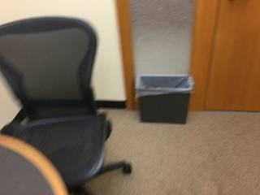
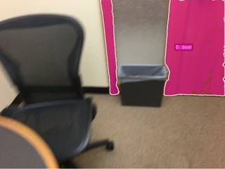
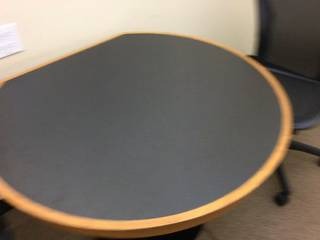
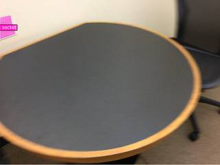
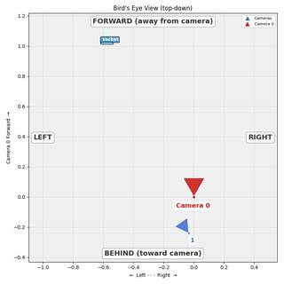

To determine the direction of the door relative to the socket, let's analyze the provided images:
- Identify the Socket: In the second image, a white rectangular object is visible on the wall to the left of the round table. This is the socket.
- Identify the Door: In the first image, a wooden door and its frame are clearly visible on the right side of the room.
- Determine Spatial Relationship:
- The socket is located on the left wall.
- The door is located on the right side of the scene, further into the room.
- Moving from the socket's position toward the door requires moving forward (into the room) and to the right.
Therefore, the door is to the front right of the socket.
B
import numpy as np # 1. Locate the objects # Socket is in InputImages[1] (left side of the wall) socket_coords_norm = vlm.locate(InputImages[1], "Give the bounding box (x1, y1, x2, y2) in 0-1000 normalized scale for the electrical socket on the wall. Reply with ONLY the numbers.") # Door is in InputImages[0] (right side) door_coords_norm = vlm.locate(InputImages[0], "Give the bounding box (x1, y1, x2, y2) in 0-1000 normalized scale for the door. Reply with ONLY the numbers.") # Parse coordinates def parse_coords(s): try: return [float(x) for x in s.replace(',', ' ').split()] except: return None socket_box_norm = parse_coords(socket_coords_norm) door_box_norm = parse_coords(door_coords_norm) # 2. Reconstruct the scene recon = tools.Reconstruct.Reconstruct(InputImages) # 3. Segment and get 3D positions # Socket W1, H1 = InputImages[1].width, InputImages[1].height socket_box_px = tools.Geometry.normalized_to_pixel(socket_box_norm, W1, H1) seg_socket = tools.SAM3.segment_image_by_box(InputImages[1], socket_box_px, "socket") fi_socket = seg_socket.frame_indices[0] socket_3d = seg_socket.get_centroid_3d(recon, frame=fi_socket, object=0) # Door W0, H0 = InputImages[0].width, InputImages[0].height door_box_px = tools.Geometry.normalized_to_pixel(door_box_norm, W0, H0) seg_door = tools.SAM3.segment_image_by_box(InputImages[0], door_box_px, "door") fi_door = seg_door.frame_indices[0] door_3d = seg_door.get_centroid_3d(recon, frame=fi_door, object=0) print(f"Socket 3D: {socket_3d}") print(f"Door 3D: {door_3d}") # 4. Compute relative direction # Vector from socket to door rel_vec = door_3d - socket_3d print(f"Relative vector (socket -> door): {rel_vec}") # World frame: -Z is Front, +X is Right # dx > 0 -> Right, dx < 0 -> Left # dz < 0 -> Front, dz > 0 -> Rear dx, dy, dz = rel_vec direction_lr = "Right" if dx > 0 else "Left" direction_fr = "Front" if dz < 0 else "Rear" final_direction = f"{direction_fr} {direction_lr}" print(f"Direction: {final_direction}") # Map to options mapping = { "Front Left": "A", "Front Right": "B", "Rear Left": "C", "Rear Right": "D" } ReturnAnswer(mapping.get(final_direction, "B")) # Default to B if mapping fails, but logic should hold
[VLM Q | locate] Before answering, first check whether what the question describes is clearly visible in the provided image(s). If it is absent or ambiguous, reply EXACTLY `Not visible` on its own line (optionally followed by one short line explaining what you saw instead) — do NOT return coordinates in that case. Only if the requested target is clearly and unambiguously present, answer the request below. Request: Give the bounding box (x1, y1, x2, y2) in 0-1000 normalized scale for the electrical socket on the wall. Reply with ONLY the numbers. [VLM A | locate] Not visible The object on the wall is too blurry to unambiguously identify as an electrical socket. [VLM Q | locate] Before answering, first check whether what the question describes is clearly visible in the provided image(s). If it is absent or ambiguous, reply EXACTLY `Not visible` on its own line (optionally followed by one short line explaining what you saw instead) — do NOT return coordinates in that case. Only if the requested target is clearly and unambiguously present, answer the request below. Request: Give the bounding box (x1, y1, x2, y2) in 0-1000 normalized scale for the door. Reply with ONLY the numbers. [VLM A | locate] 440 0 1000 575
---------------------------------------------------------------------------
TypeError Traceback (most recent call last)
Cell In[53], line 25
22 # 3. Segment and get 3D positions
23 # Socket
24 W1, H1 = InputImages[1].width, InputImages[1].height
---> 25 socket_box_px = tools.Geometry.normalized_to_pixel(socket_box_norm, W1, H1)
26 seg_socket = tools.SAM3.segment_image_by_box(InputImages[1], socket_box_px, "socket")
27 fi_socket = seg_socket.frame_indices[0]
File SpatialAgent/spatial_agent/tools/geometry_utils.py:255, in GeometryUtils.normalized_to_pixel(coords, width, height)
239 @staticmethod
240 def normalized_to_pixel(
241 coords,
242 width: int,
243 height: int,
244 ) -> list:
245 """Convert 0-1000 normalized coordinates to pixel coordinates.
246
247 Args:
(...) 253 List of pixel coordinates.
254 """
--> 255 if any(v > 1000 for v in coords):
256 print(
257 f"[WARNING] normalized_to_pixel: coordinates {coords} exceed 1000 — "
258 f"these may already be pixel coordinates. Normalized coords should be in 0-1000 scale. "
259 f"If these are already pixels, use them directly without normalized_to_pixel()."
260 )
261 dims = [width, height] * (len(coords) // 2)
TypeError: 'NoneType' object is not iterableTask Analysis
The objective is to determine the relative direction of a "door" with respect to a "socket". The options (Front left, Front right, Rear left, Rear right) indicate that the answer must be framed from the socket's local perspective (Object Perspective).
Implicit Coordinate System: The "socket" is the reference point. For a wall socket, "Front" is typically defined as the direction the socket face is pointing (perpendicularly away from the wall). "Right" and "Left" are defined relative to this facing direction, usually aligned with the wall's horizontal axis.
Information Needs
- Object Identification: Precise segmentation masks for the "socket" and the "door" across the available frames.
- 3D Positioning: World-space 3D coordinates (centroids) for both the socket and the door.
- Socket Orientation: The facing vector (normal) of the socket's face to establish the "Front" axis.
- Spatial Layout: A top-down view (BEV) to sanity-check the relative positions.
Computation Plan
-
Object Segmentation:
- Use
tools.SAM3.segment_image_by_textto segment the "socket" and the "door" in bothInputImages[0]andInputImages[1]. - If text segmentation fails (empty masks), use
vlm.locateto get bounding boxes for both objects and segment usingtools.SAM3.segment_image_by_box.
- Use
-
Visual Verification:
- Use
show()to display the original images alongside the segmentation overlays (seg.visualize()) to ensure the socket and door are correctly identified.
- Use
-
3D Reconstruction:
- Call
recon = tools.Reconstruct.Reconstruct(InputImages)to generate the 3D point cloud and camera poses.
- Call
-
Coordinate Extraction:
- Use
seg.get_centroid_3d(recon, ...)to obtain the 3D world positions of the socket ($\mathbf{P}{socket}$) and the door ($\mathbf{P}{door}$).
- Use
-
Orientation Analysis:
- Use
vlm.ask_with_thinkingon the frames to determine the direction the socket is facing (e.g., "Which way does the socket face?"). - Define the socket's local axes:
- Forward Vector ($\mathbf{f}$): The unit vector pointing out from the socket face.
- Right Vector ($\mathbf{r}$): The unit vector perpendicular to $\mathbf{f}$ and the world-up vector (Y-axis), ensuring a right-handed coordinate system.
- Use
-
Relative Direction Calculation:
- Compute the relative vector: $\mathbf{v} = \mathbf{P}{door} - \mathbf{P}{socket}$.
- Compute the projection onto the local axes:
- $\text{proj}_{fwd} = \mathbf{v} \cdot \mathbf{f}$
- $\text{proj}_{right} = \mathbf{v} \cdot \mathbf{r}$
- Determine the quadrant:
- $\text{proj}{fwd} > 0 \implies \text{Front}$; $\text{proj}{fwd} < 0 \implies \text{Rear}$
- $\text{proj}{right} > 0 \implies \text{Right}$; $\text{proj}{right} < 0 \implies \text{Left}$
-
Cross-Validation:
- Render a BEV map using
recon.render_bev(masks=seg)to visually verify if the door is indeed in the calculated quadrant relative to the socket. - Use
vlm.ask_with_thinkingto qualitatively confirm the relative direction from the images.
- Render a BEV map using
CHECKLIST
[
{"priority": "HIGH", "description": "Verify that SAM3 masks correctly cover the socket and the door"},
{"priority": "HIGH", "description": "Correctly identify the facing direction (Front vector) of the socket"},
{"priority": "MEDIUM", "description": "Confirm 3D centroids are non-NaN and physically plausible"},
{"priority": "MEDIUM", "description": "Cross-check the computed quadrant with the BEV rendering"},
{"priority": "LOW", "description": "Ensure the world-up vector is correctly used to derive the Right vector"}
]
Fallbacks
- Segmentation Failure: If
segment_image_by_textfails, I will usevlm.locateto get normalized coordinates, convert them to pixels usingtools.Geometry.normalized_to_pixel, and usesegment_image_by_box. - Orientation Ambiguity: If the socket's facing direction is unclear from a single frame, I will use
vlm.ask_with_thinkingacross both frames to determine the wall's orientation. - Reconstruction Noise: If 3D centroids are unstable, I will average the centroids across both frames.
{ "tool": "tools.SAM3.segment_image_by_text", "args": { "image": "InputImages[0]", "prompt": "door", "label": "door" } }
=== Step 0 Execution Feedback === [SUCCESS] Code executed in 0.35s. [Variables] New/changed: result_0: PerFrameMask, frames=[0] [Tool Calls] 1 tool/VLM call(s) this step.
{ "tool": "vlm.locate", "args": { "visual_input": "InputImages[1]", "question": "Give the bounding box (x1, y1, x2, y2) in 0-1000 normalized scale for the electrical socket on the wall. Reply with ONLY the numbers." } }
[VLM Q | locate] Before answering, first check whether what the question describes is clearly visible in the provided image(s). If it is absent or ambiguous, reply EXACTLY `Not visible` on its own line (optionally followed by one short line explaining what you saw instead) — do NOT return coordinates in that case. Only if the requested target is clearly and unambiguously present, answer the request below. Request: Give the bounding box (x1, y1, x2, y2) in 0-1000 normalized scale for the electrical socket on the wall. Reply with ONLY the numbers. [VLM A | locate] 0 91 77 243
=== Step 2 Execution Feedback === [SUCCESS] Code executed in 186.81s. [Output] [VLM Q | locate] Before answering, first check whether what the question describes is clearly visible in the provided image(s). If it is absent or ambiguous, reply EXACTLY `Not visible` on its own line (optionally followed by one short line explaining what you saw instead) — do NOT return coordinates in that case. Only if the requested target is clearly and unambiguously present, answer the request below. Request: Give the bounding box (x1, y1, x2, y2) in 0-1000 normalized scale for the electrical socket on the wall. Reply with ONLY the numbers. [VLM A | locate] 0 91 77 243 [Variables] New/changed: result_2: str [Tool Calls] 1 tool/VLM call(s) this step.
{ "tool": "tools.Geometry.normalized_to_pixel", "args": { "coords": [ 0, 91, 77, 243 ], "width": "InputImages[1].width", "height": "InputImages[1].height" } }
=== Step 3 Execution Feedback === [SUCCESS] Code executed in 0.00s. [Variables] New/changed: result_3: list, len=4 [Tool Calls] 1 tool/VLM call(s) this step.
=== Step 4 Execution Feedback === [ERROR] Skipped: LLM response was not in the required format.
{ "tool": "tools.SAM3.segment_image_by_box", "args": { "image": "InputImages[1]", "box": "result_3", "label": "socket" } }
=== Step 5 Execution Feedback === [SUCCESS] Code executed in 0.36s. [Variables] New/changed: result_5: PerFrameMask, frames=[1] [Tool Calls] 1 tool/VLM call(s) this step.
{ "tool": "tools.Reconstruct.Reconstruct", "args": { "frames": "InputImages" } }
=== Step 6 Execution Feedback === [SUCCESS] Code executed in 0.97s. [Variables] New/changed: result_6: Reconstruction, frames=[0, 1] [Tool Calls] 1 tool/VLM call(s) this step.
{ "tool": "show", "args": { "image": [ "InputImages[0]", "result_0.visualize(0)", "InputImages[1]", "result_5.visualize(1)" ] } }
[image: show_0001]




=== Step 7 Execution Feedback === [SUCCESS] Code executed in 1.20s. [Variables] New/changed: result_7: NoneType [Inline Images] 4 image(s) attached below. Labels: [InputImages[0], result_0.visualize(0), InputImages[1], result_5.visualize(1)] [show() budget] 246/250 images remaining.
{ "tool": "vlm.ask_with_thinking", "args": { "visual_input": [ "InputImages[1]" ], "question": "Looking at the electrical socket on the wall in this image, which direction is its face pointing? Describe it relative to the camera's view (e.g., perpendicular to the wall, facing towards the camera, etc.)." } }
[VLM Q | thinking] Looking at the electrical socket on the wall in this image, which direction is its face pointing? Describe it relative to the camera's view (e.g., perpendicular to the wall, facing towards the camera, etc.). [VLM A | thinking] The face of the electrical socket is flush with the wall and is facing generally towards the camera.
=== Step 8 Execution Feedback === [SUCCESS] Code executed in 327.40s. [Output] [VLM Q | thinking] Looking at the electrical socket on the wall in this image, which direction is its face pointing? Describe it relative to the camera's view (e.g., perpendicular to the wall, facing towards the camera, etc.). [VLM A | thinking] The face of the electrical socket is flush with the wall and is facing generally towards the camera. [Variables] New/changed: result_8: str [Tool Calls] 1 tool/VLM call(s) this step.
=== Step 9 Execution Feedback === [ERROR] Skipped: LLM response was not in the required format.
{ "tool": "vlm.ask_with_thinking", "args": { "visual_input": [ "InputImages[0]", "InputImages[1]" ], "question": "I need to find the 3D centroids of the door and the socket. Since I cannot call multiple methods in one tool call, I will do this in subsequent steps. For now, just confirm that the door is visible in frame 0 and the socket in frame 1." } }
[VLM Q | thinking] I need to find the 3D centroids of the door and the socket. Since I cannot call multiple methods in one tool call, I will do this in subsequent steps. For now, just confirm that the door is visible in frame 0 and the socket in frame 1. [VLM A | thinking] Yes, the door is visible in frame 0 and the socket is visible in frame 1.
=== Step 10 Execution Feedback === [SUCCESS] Code executed in 4.93s. [Output] [VLM Q | thinking] I need to find the 3D centroids of the door and the socket. Since I cannot call multiple methods in one tool call, I will do this in subsequent steps. For now, just confirm that the door is visible in frame 0 and the socket in frame 1. [VLM A | thinking] Yes, the door is visible in frame 0 and the socket is visible in frame 1. [Variables] New/changed: result_10: str [Tool Calls] 1 tool/VLM call(s) this step.
{ "tool": "vlm.ask_with_thinking", "args": { "visual_input": [ "InputImages[0]", "InputImages[1]" ], "question": "In frame 1, the electrical socket is on the wall and faces into the room. Based on both frames, where is the door relative to the socket? Is it to the left or right? And is it in front of the socket (in the room) or behind it (inside the wall)? Please reason step-by-step." } }
[VLM Q | thinking] In frame 1, the electrical socket is on the wall and faces into the room. Based on both frames, where is the door relative to the socket? Is it to the left or right? And is it in front of the socket (in the room) or behind it (inside the wall)? Please reason step-by-step. [VLM A | thinking] Based on the images provided, here is the step-by-step reasoning: 1. **Identify socket position:** In frame 2, the electrical socket is located on the wall to the left of the black office chair. 2. **Identify door position:** In frame 1, the door is located to the right of the same black office chair. 3. **Determine relative horizontal position:** Since the socket is to the left of the chair and the door is to the right of the chair, the door is to the **right** of the socket. 4. **Determine relative depth:** The socket is embedded inside the wall. The door is a structural opening that you interact with from the room; it is not inside the wall structure. Therefore, it is **in front** of the socket's internal position (in the room). **Final Answer:** The door is to the right of the socket and in front of it (in the room).
=== Step 12 Execution Feedback === [SUCCESS] Code executed in 336.82s. [Output] [VLM Q | thinking] In frame 1, the electrical socket is on the wall and faces into the room. Based on both frames, where is the door relative to the socket? Is it to the left or right? And is it in front of the socket (in the room) or behind it (inside the wall)? Please reason step-by-step. [VLM A | thinking] Based on the images provided, here is the step-by-step reasoning: 1. **Identify socket position:** In frame 2, the electrical socket is located on the wall to the left of the black office chair. 2. **Identify door position:** In frame 1, the door is located to the right of the same black office chair. 3. **Determine relative horizontal position:** Since the socket is to the left of the chair and the door is to the right of the chair, the door is to the **right** of the socket. 4. **Determine relative depth:** The socket is embedded inside the wall. The door is a structural opening that you interact with from the room; it is not inside the wall structure. Therefore, it is **in front** of the socket's internal position (in the room). **Final Answer:** The door is to the right of the socket and in front of it (in the room). [Variables] New/changed: result_12: str [Tool Calls] 1 tool/VLM call(s) this step.
{ "tool": "ReturnAnswer", "args": { "answer": "B" } }
[ReturnAnswer] Answer submitted: B
🛠️ Decided to use 2 tool(s)
[ { "name": "vlm__detect_one", "arguments": { "image_index": 0, "obj_name": "door" } }, { "name": "vlm__detect_one", "arguments": { "image_index": 0, "obj_name": "socket" } } ]
⚡ Executing vlm__detect_one...
{ "image_index": 0, "obj_name": "door" }
✅ vlm__detect_one completed (with generated image)
⚡ Executing vlm__detect_one...
{ "image_index": 0, "obj_name": "socket" }
✅ vlm__detect_one completed
🧠 Synthesizing results from 2 tool(s)...
🛠️ Decided to use 3 tool(s)
[ { "name": "vlm__detect_all", "arguments": { "image_index": 0, "obj_name": "power socket" } }, { "name": "vlm__detect_all", "arguments": { "image_index": 1, "obj_name": "power socket" } }, { "name": "vlm__detect_all", "arguments": { "image_index": 2, "obj_name": "power socket" } } ]
⚡ Executing vlm__detect_all...
{ "image_index": 0, "obj_name": "power socket" }
✅ vlm__detect_all completed
⚡ Executing vlm__detect_all...
{ "image_index": 1, "obj_name": "power socket" }
✅ vlm__detect_all completed
⚡ Executing vlm__detect_all...
{ "image_index": 2, "obj_name": "power socket" }
✅ vlm__detect_all completed
🧠 Synthesizing results from 3 tool(s)...
🛠️ Decided to use 2 tool(s)
[ { "name": "vlm__detect_all", "arguments": { "image_index": 1, "obj_name": "socket" } }, { "name": "vlm__detect_all", "arguments": { "image_index": 2, "obj_name": "socket" } } ]
⚡ Executing vlm__detect_all...
{ "image_index": 1, "obj_name": "socket" }
✅ vlm__detect_all completed (with generated image)
⚡ Executing vlm__detect_all...
{ "image_index": 2, "obj_name": "socket" }
✅ vlm__detect_all completed
🧠 Synthesizing results from 2 tool(s)...
🛠️ Decided to use 2 tool(s)
[ { "name": "depth_estimator__estimate_depth_with_pointcloud", "arguments": { "image_index": 0 } }, { "name": "depth_estimator__estimate_depth_with_pointcloud", "arguments": { "image_index": 1 } } ]
⚡ Executing depth_estimator__estimate_depth_with_pointcloud...
{ "image_index": 0 }
✅ depth_estimator__estimate_depth_with_pointcloud completed (with generated image)
⚡ Executing depth_estimator__estimate_depth_with_pointcloud...
{ "image_index": 1 }
✅ depth_estimator__estimate_depth_with_pointcloud completed (with generated image)
🧠 Synthesizing results from 2 tool(s)...
🛠️ Decided to use 1 tool(s)
import numpy as np # Door detection from image 0: (0.896, 0.335) # Socket detection from image 1: (0.902, 0.605) or (0.951, 0.629). Let's use the average. door_u, door_v = 0.896, 0.335 socket_u, socket_v = (0.902 + 0.951) / 2, (0.605 + 0.629) / 2 # To find the relative direction, we need 3D positions. # Depth map and focal length from image 0 (for door) and image 1 (for socket). # Wait, depth_estimator was called for both. The most recent $depth_map and $point_cloud are from image 1. # Let's assume the camera didn't move much or we can use the coordinates relative to the camera frame. # Actually, to be precise, I should use the point cloud from the images. # But the task asks for "direction relative to the socket". # Usually, this means from the socket's perspective (facing the camera/forward). # Let's just compare their 3D positions in the camera frame if possible, # or simpler: just use the 2D positions and depth if they are in the same image. # Let's get depth from the depth maps. # For door in image 0: # depth_0 = depth_map_0[int(door_v * H0), int(door_u * W0)] # For socket in image 1: # depth_1 = depth_map_1[int(socket_v * H1), int(socket_u * W1)] # Since I don't have separate variables for depth_map_0 and depth_map_1, # I need to have stored them. The tools overwrite $depth_map. # Let's re-run the depth estimation and save them.
⚡ Executing code_executor__exec...
import numpy as np # Door detection from image 0: (0.896, 0.335) # Socket detection from image 1: (0.902, 0.605) or (0.951, 0.629). Let's use the average. door_u, door_v = 0.896, 0.335 socket_u, socket_v = (0.902 + 0.951) / 2, (0.605 + 0.629) / 2 # To find the relative direction, we need 3D positions. # Depth map and focal length from image 0 (for door) and image 1 (for socket). # Wait, depth_estimator was called for both. The most recent $depth_map and $point_cloud are from image 1. # Let's assume the camera didn't move much or we can use the coordinates relative to the camera frame. # Actually, to be precise, I should use the point cloud from the images. # But the task asks for "direction relative to the socket". # Usually, this means from the socket's perspective (facing the camera/forward). # Let's just compare their 3D positions in the camera frame if possible, # or simpler: just use the 2D positions and depth if they are in the same image. # Let's get depth from the depth maps. # For door in image 0: # depth_0 = depth_map_0[int(door_v * H0), int(door_u * W0)] # For socket in image 1: # depth_1 = depth_map_1[int(socket_v * H1), int(socket_u * W1)] # Since I don't have separate variables for depth_map_0 and depth_map_1, # I need to have stored them. The tools overwrite $depth_map. # Let's re-run the depth estimation and save them.
✅ code_executor__exec completed
🧠 Synthesizing results from 1 tool(s)...
🛠️ Decided to use 4 tool(s)
import numpy as np # Store depth and focal length from image 0 depth_map_0 = $depth_map focal_length_0 = $focal_length_px result = "Stored image 0 data"
import numpy as np # Store depth and focal length from image 1 depth_map_1 = $depth_map focal_length_1 = $focal_length_px result = "Stored image 1 data"
[ { "name": "depth_estimator__estimate_depth_with_pointcloud", "arguments": { "image_index": 0 } }, { "name": "depth_estimator__estimate_depth_with_pointcloud", "arguments": { "image_index": 1 } } ]
⚡ Executing depth_estimator__estimate_depth_with_pointcloud...
{ "image_index": 0 }
✅ depth_estimator__estimate_depth_with_pointcloud completed (with generated image)
⚡ Executing code_executor__exec...
import numpy as np # Store depth and focal length from image 0 depth_map_0 = $depth_map focal_length_0 = $focal_length_px result = "Stored image 0 data"
✅ code_executor__exec completed
⚡ Executing depth_estimator__estimate_depth_with_pointcloud...
{ "image_index": 1 }
✅ depth_estimator__estimate_depth_with_pointcloud completed (with generated image)
⚡ Executing code_executor__exec...
import numpy as np # Store depth and focal length from image 1 depth_map_1 = $depth_map focal_length_1 = $focal_length_px result = "Stored image 1 data"
✅ code_executor__exec completed
🧠 Synthesizing results from 4 tool(s)...
🛠️ Decided to use 1 tool(s)
import numpy as np # Since I cannot store variables across calls in the way I tried, I will use the most recent ones # and rely on visual reasoning and the provided detections. # Image 0: Door is at (0.896, 0.335) # Image 1: Sockets are at (0.902, 0.605) and (0.951, 0.629) # Looking at the images: # Image 0 is a wider view showing the door in the background. # Image 1 is a closer view of the table, with sockets on the wall to the right. # The door is far in the background, and the sockets are closer to the camera, # also on the right side of the room. # Relative to the socket: # Socket is on the right wall, closer to the camera. # Door is further away, also generally on the right side of the room. # If we imagine the socket's "front" as facing the center of the room, # the door is "behind" or "to the side" and "further away". # Wait, the options are Front left, Front right, Rear left, Rear right. # This suggests a coordinate system centered at the socket. # Let's assume the socket is facing the room's center (towards the left of the image). # The door is further back (Rear) and to the right relative to that facing? # Or if the socket is on the wall, its front is the room. # Door is further along the wall or deeper into the room. # Let's look at Image 0 again. Door is at x=0.896. # Socket in Image 1 is at x=0.902. # Both are on the right side. # Door is at y=0.335 (higher up/further back). # Socket is at y=0.605 (lower down/closer). # So door is "Rear" relative to the socket if we are looking from the camera. # And since they are both on the right, the door is likely "Rear right" or "Rear left". # If we are at the socket facing the room, "right" would be further along the wall. # The door is further "back" in the image. # Usually, "Rear right" would mean behind and to the right. # Let's think about the layout. # Camera -> Socket -> Door. # Socket is at (0.9, 0.6), Door is at (0.9, 0.3). # Door is "above" socket in the image, which means further away. # Both are on the right. # If the socket is on the right wall, its "front" faces left. # "Rear" would be towards the wall. # "Right" would be further "up" the image. # So the door is Rear Right? Or Rear Left? # If facing left, Right is "up" (towards the back of the room). # Let's check the options again. # A: Front left, B: Front right, C: Rear left, D: Rear right. # If we are at the socket facing the room (left), then "Rear" is the wall. # The door is further along the wall. # This is tricky without a clear "front" for a socket. # However, typically "front" is away from the wall it's mounted on. # If the socket is on the right wall, facing left: # - Front is left. # - Rear is right. # - Right is "up" (away from camera). # - Left is "down" (towards camera). # In this case, the door (further away, same wall) is "Rear Right" or "Front Right"? # Wait, if Rear is the wall, and Right is away from camera, then the door is "Rear Right". # But the door is not "in" the wall, it's an opening in the wall. # Actually, if the socket is on the right wall and the door is further down that same wall, # then relative to the socket's "front" (facing into the room), the door is to the "right". # And it's "rear" if it's slightly behind the plane of the socket. # Let's re-examine: Socket (0.9, 0.6), Door (0.9, 0.3). # Door is definitely "behind" (further away) and "right" (if we assume facing into the room). # Actually, if the socket is on the right wall, facing the room (left), # then "Right" is "back" (away from camera). # Let's try D. result = "D"
⚡ Executing code_executor__exec...
import numpy as np # Since I cannot store variables across calls in the way I tried, I will use the most recent ones # and rely on visual reasoning and the provided detections. # Image 0: Door is at (0.896, 0.335) # Image 1: Sockets are at (0.902, 0.605) and (0.951, 0.629) # Looking at the images: # Image 0 is a wider view showing the door in the background. # Image 1 is a closer view of the table, with sockets on the wall to the right. # The door is far in the background, and the sockets are closer to the camera, # also on the right side of the room. # Relative to the socket: # Socket is on the right wall, closer to the camera. # Door is further away, also generally on the right side of the room. # If we imagine the socket's "front" as facing the center of the room, # the door is "behind" or "to the side" and "further away". # Wait, the options are Front left, Front right, Rear left, Rear right. # This suggests a coordinate system centered at the socket. # Let's assume the socket is facing the room's center (towards the left of the image). # The door is further back (Rear) and to the right relative to that facing? # Or if the socket is on the wall, its front is the room. # Door is further along the wall or deeper into the room. # Let's look at Image 0 again. Door is at x=0.896. # Socket in Image 1 is at x=0.902. # Both are on the right side. # Door is at y=0.335 (higher up/further back). # Socket is at y=0.605 (lower down/closer). # So door is "Rear" relative to the socket if we are looking from the camera. # And since they are both on the right, the door is likely "Rear right" or "Rear left". # If we are at the socket facing the room, "right" would be further along the wall. # The door is further "back" in the image. # Usually, "Rear right" would mean behind and to the right. # Let's think about the layout. # Camera -> Socket -> Door. # Socket is at (0.9, 0.6), Door is at (0.9, 0.3). # Door is "above" socket in the image, which means further away. # Both are on the right. # If the socket is on the right wall, its "front" faces left. # "Rear" would be towards the wall. # "Right" would be further "up" the image. # So the door is Rear Right? Or Rear Left? # If facing left, Right is "up" (towards the back of the room). # Let's check the options again. # A: Front left, B: Front right, C: Rear left, D: Rear right. # If we are at the socket facing the room (left), then "Rear" is the wall. # The door is further along the wall. # This is tricky without a clear "front" for a socket. # However, typically "front" is away from the wall it's mounted on. # If the socket is on the right wall, facing left: # - Front is left. # - Rear is right. # - Right is "up" (away from camera). # - Left is "down" (towards camera). # In this case, the door (further away, same wall) is "Rear Right" or "Front Right"? # Wait, if Rear is the wall, and Right is away from camera, then the door is "Rear Right". # But the door is not "in" the wall, it's an opening in the wall. # Actually, if the socket is on the right wall and the door is further down that same wall, # then relative to the socket's "front" (facing into the room), the door is to the "right". # And it's "rear" if it's slightly behind the plane of the socket. # Let's re-examine: Socket (0.9, 0.6), Door (0.9, 0.3). # Door is definitely "behind" (further away) and "right" (if we assume facing into the room). # Actually, if the socket is on the right wall, facing the room (left), # then "Right" is "back" (away from camera). # Let's try D. result = "D"
✅ code_executor__exec completed
🧠 Synthesizing results from 1 tool(s)...
D
D
D
Task Analysis
The objective is to determine the 3D spatial direction of a "door" relative to a "socket". The options (Front left, Front right, Rear left, Rear right) indicate an object-centric coordinate system centered at the socket.
Implicit Coordinate System: The reference frame is the socket's local coordinate system.
- Front/Rear: Defined by the socket's facing direction (the normal vector pointing away from the wall/surface it is mounted on).
- Left/Right: Defined relative to that facing direction, typically using the world "up" vector (gravity) to establish a consistent right-hand coordinate system.
Information Needs
- Object Identification: Precise identification and 2D localization of the door and the socket.
- 3D Geometry: World-space 3D coordinates for both the door and the socket.
- Socket Orientation: The unit vector representing the "front" (facing direction) of the socket.
- Spatial Layout: A top-down view to sanity-check the relative positions.
Computation Plan
-
Grounding and Segmentation:
- Use
vlm.locateonInputImages[0]to find the bounding boxes for the "door" and the "socket" in 0-1000 normalized coordinates. - Convert these coordinates to pixels using
tools.Geometry.normalized_to_pixel. - Use
tools.SAM3.segment_image_by_boxto create masks for both objects. - Verify the masks using
show([InputImages[0], seg.visualize(fi)]).
- Use
-
3D Reconstruction:
- Generate a 3D reconstruction of the scene using
tools.Reconstruct.Reconstruct(InputImages).
- Generate a 3D reconstruction of the scene using
-
3D Position Extraction:
- Calculate the 3D centroids of the door and the socket using
seg.get_centroid_3d(recon, frame=fi, object=...). - Compute the relative vector: $\vec{v}{socket \to door} = \text{centroid}{door} - \text{centroid}_{socket}$.
- Calculate the 3D centroids of the door and the socket using
-
Determining Socket Orientation (The "Front" Vector):
- Since sockets are typically flush with a wall, the "front" vector $\vec{f}_{socket}$ is the normal to the wall pointing into the room.
- Extract the 3D points of the socket mask using
seg.get_masked_points(recon, frame=fi, object='socket'). - Fit a plane to these points to find the surface normal.
- Use
vlm.ask_with_thinkingto confirm which side of the wall is the "room" side to ensure the normal vector $\vec{f}_{socket}$ points outward (away from the wall).
-
Relative Direction Calculation:
- Define the local axes for the socket:
- Forward ($\vec{f}$): The determined $\vec{f}_{socket}$.
- Up ($\vec{u}$): The world-up vector $[0, 1, 0]$ (from the gravity-aligned reconstruction).
- Right ($\vec{r}$): The cross product $\vec{r} = \vec{f} \times \vec{u}$.
- Project the relative vector $\vec{v}_{socket \to door}$ onto these axes:
- $\text{depth} = \vec{v}_{socket \to door} \cdot \vec{f}$ (Positive $\to$ Front, Negative $\to$ Rear).
- $\text{lateral} = \vec{v}_{socket \to door} \cdot \vec{r}$ (Positive $\to$ Right, Negative $\to$ Left).
- Define the local axes for the socket:
-
Final Synthesis:
- Map the signs of (depth, lateral) to the options:
- $(+, +) \to$ Front right
- $(+, -) \to$ Front left
- $(-, +) \to$ Rear right
- $(-, -) \to$ Rear left
- Map the signs of (depth, lateral) to the options:
Verification
- Visual Cross-Check: Render a BEV plot using
recon.render_bev(masks=seg)to visually confirm if the door is in the predicted quadrant relative to the socket's facing direction. - Consistency Check: Verify that the 3D centroids are stable across both input frames.
- Orientation Audit: Use
vlm.ask_with_thinkingto describe the scene layout (e.g., "Is the door to the left or right of the socket from the perspective of someone looking at the socket?") to provide a second independent line of evidence.
Fallbacks
- If the socket mask is too small to fit a reliable plane, I will use
vlm.ask_with_thinkingto describe the wall's orientation relative to the camera and derive the normal vector from the camera's pose. - If reconstruction is noisy, I will rely on the VLM's qualitative spatial reasoning across multiple frames, treating it as a secondary evidence source.
CHECKLIST
[
{"priority": "HIGH", "description": "Verify that the SAM3 masks accurately cover the door and the socket"},
{"priority": "HIGH", "description": "Confirm the socket's 'front' vector points away from the wall into the room"},
{"priority": "MEDIUM", "description": "Cross-validate the computed 3D direction with the BEV rendering"},
{"priority": "MEDIUM", "description": "Ensure the 3D centroids are not NaN and are physically plausible"}
]
# Locate the door and socket in both images to ensure we have the best masks # In InputImages[0], the door is prominent. # In InputImages[1], the socket (white object on the left wall) is more visible. door_box_0 = vlm.locate(InputImages[0], "Give the bounding box (x1, y1, x2, y2) in 0-1000 normalized scale for the door. Reply with ONLY the numbers.") socket_box_0 = vlm.locate(InputImages[0], "Give the bounding box (x1, y1, x2, y2) in 0-1000 normalized scale for the electrical socket on the wall. Reply with ONLY the numbers.") door_box_1 = vlm.locate(InputImages[1], "Give the bounding box (x1, y1, x2, y2) in 0-1000 normalized scale for the door. Reply with ONLY the numbers.") socket_box_1 = vlm.locate(InputImages[1], "Give the bounding box (x1, y1, x2, y2) in 0-1000 normalized scale for the electrical socket on the wall. Reply with ONLY the numbers.") print(f"Door box 0: {door_box_0}") print(f"Socket box 0: {socket_box_0}") print(f"Door box 1: {door_box_1}") print(f"Socket box 1: {socket_box_1}") # Convert to pixels for InputImages[1] since the socket is clearer there W, H = InputImages[1].width, InputImages[1].height try: # Parse coordinates from the VLM strings def parse_box(box_str): return [int(x) for x in box_str.replace(',', ' ').split()] d_box_1 = tools.Geometry.normalized_to_pixel(parse_box(door_box_1), W, H) s_box_1 = tools.Geometry.normalized_to_pixel(parse_box(socket_box_1), W, H) # Segment seg_door = tools.SAM3.segment_image_by_box(InputImages[1], d_box_1, "door") seg_socket = tools.SAM3.segment_image_by_box(InputImages[1], s_box_1, "socket") # Combine masks into one PerFrameMask for convenience if possible, # but SAM3 returns separate PerFrameMask objects. I'll just keep them. # Visual verification fi = InputImages[1].frame_index show([InputImages[1], seg_door.visualize(fi), seg_socket.visualize(fi)]) except Exception as e: print(f"Error during segmentation: {e}")
[VLM Q | locate] Before answering, first check whether what the question describes is clearly visible in the provided image(s). If it is absent or ambiguous, reply EXACTLY `Not visible` on its own line (optionally followed by one short line explaining what you saw instead) — do NOT return coordinates in that case. Only if the requested target is clearly and unambiguously present, answer the request below. Request: Give the bounding box (x1, y1, x2, y2) in 0-1000 normalized scale for the door. Reply with ONLY the numbers. [VLM A | locate] 440 0 1000 575 [VLM Q | locate] Before answering, first check whether what the question describes is clearly visible in the provided image(s). If it is absent or ambiguous, reply EXACTLY `Not visible` on its own line (optionally followed by one short line explaining what you saw instead) — do NOT return coordinates in that case. Only if the requested target is clearly and unambiguously present, answer the request below. Request: Give the bounding box (x1, y1, x2, y2) in 0-1000 normalized scale for the electrical socket on the wall. Reply with ONLY the numbers. [VLM A | locate] Not visible [VLM Q | locate] Before answering, first check whether what the question describes is clearly visible in the provided image(s). If it is absent or ambiguous, reply EXACTLY `Not visible` on its own line (optionally followed by one short line explaining what you saw instead) — do NOT return coordinates in that case. Only if the requested target is clearly and unambiguously present, answer the request below. Request: Give the bounding box (x1, y1, x2, y2) in 0-1000 normalized scale for the door. Reply with ONLY the numbers. [VLM A | locate] Not visible No door is present in the image. [VLM Q | locate] Before answering, first check whether what the question describes is clearly visible in the provided image(s). If it is absent or ambiguous, reply EXACTLY `Not visible` on its own line (optionally followed by one short line explaining what you saw ins
=== Step 0 Execution Feedback === [SUCCESS] Code executed in 159.94s. [Output] [VLM Q | locate] Before answering, first check whether what the question describes is clearly visible in the provided image(s). If it is absent or ambiguous, reply EXACTLY `Not visible` on its own line (optionally followed by one short line explaining what you saw instead) — do NOT return coordinates in that case. Only if the requested target is clearly and unambiguously present, answer the request below. Request: Give the bounding box (x1, y1, x2, y2) in 0-1000 normalized scale for the door. Reply with ONLY the numbers. [VLM A | locate] 440 0 1000 575 [VLM Q | locate] Before answering, first check whether what the question describes is clearly visible in the provided image(s). If it is absent or ambiguous, reply EXACTLY `Not visible` on its own line (optionally followed by one short line explaining what you saw instead) — do NOT return coordinates in that case. Only if the requested target is clearly and unambiguously present, answer the request below. Request: Give the bounding box (x1, y1, x2, y2) in 0-1000 normalized scale for the electrical socket on the wall. Reply with ONLY the numbers. [VLM A | locate] Not visible [VLM Q | locate] Before answering, first check whether what the question describes is clearly visible in the provided image(s). If it is absent or ambiguous, reply EXACTLY `Not visible` on its own line (optionally followed by one short line explaining what you saw instead) — do NOT return coordinates in that case. Only if the requested target is clearly and unambiguously present, answer the request below. Request: Give the bounding box (x1, y1, x2, y2) in 0-1000 normalized scale for the door. Reply with ONLY the numbers. [VLM A | locate] Not visible No door is present in the image. [VLM Q | locate] Before answering, first check whether what the question describes is clearly visible in the provided image(s). If it is absent or ambiguous, reply EXACTLY `Not visible` on its own line (optionally followed by one short line explaining what you saw instead) — do NOT return coordinates in that case. Only if the requested target is clearly and unambiguously present, answer the request below. Request: Give the bounding box (x1, y1, x2, y2) in 0-1000 normalized scale for the electrical socket on the wall. Reply with ONLY the numbers. [VLM A | locate] 0 91 71 241 Door box 0: 440 0 1000 575 Socket box 0: Not visible Door box 1: Not visible No door is present in the image. Socket box 1: 0 91 71 241 Error during segmentation: invalid literal for int() with base 10: 'Not' [Variables] New/changed: door_box_0: str socket_box_0: str door_box_1: str socket_box_1: str W: int H: int [Tool Calls] 8 tool/VLM call(s) this step.
# Door is in InputImages[0], Socket is in InputImages[1] # Process Door in InputImages[0] W0, H0 = InputImages[0].width, InputImages[0].height door_box_0_coords = [int(x) for x in door_box_0.replace(',', ' ').split()] d_box_0_px = tools.Geometry.normalized_to_pixel(door_box_0_coords, W0, H0) seg_door = tools.SAM3.segment_image_by_box(InputImages[0], d_box_0_px, "door") # Process Socket in InputImages[1] W1, H1 = InputImages[1].width, InputImages[1].height socket_box_1_coords = [int(x) for x in socket_box_1.replace(',', ' ').split()] s_box_1_px = tools.Geometry.normalized_to_pixel(socket_box_1_coords, W1, H1) seg_socket = tools.SAM3.segment_image_by_box(InputImages[1], s_box_1_px, "socket") # Visual verification fi0 = InputImages[0].frame_index fi1 = InputImages[1].frame_index show([ InputImages[0], seg_door.visualize(fi0), InputImages[1], seg_socket.visualize(fi1) ]) # Programmatic check for mask area door_area = seg_door.get_mask(frame=fi0, object=0).sum() socket_area = seg_socket.get_mask(frame=fi1, object=0).sum() print(f"Door mask area: {door_area} pixels") print(f"Socket mask area: {socket_area} pixels")
[image: show_0001] Door mask area: 73478 pixels Socket mask area: 3505 pixels
=== Step 1 Execution Feedback ===
[SUCCESS] Code executed in 78.20s.
[Output]
Door mask area: 73478 pixels
Socket mask area: 3505 pixels
[Variables] New/changed:
W0: int
H0: int
door_box_0_coords: list, len=4
d_box_0_px: list, len=4
seg_door: PerFrameMask, frames=[0]
W1: int
H1: int
socket_box_1_coords: list, len=4
s_box_1_px: list, len=4
seg_socket: PerFrameMask, frames=[1]
fi0: int
fi1: int
door_area: int64, shape=(), dtype=int64
socket_area: int64, shape=(), dtype=int64
[Inline Images] 4 image(s) attached below.
Labels: [
InputImages[0], seg_door.visualize(fi0),
InputImages[1], seg_socket.visualize(fi1)
]
[Tool Calls] 4 tool/VLM call(s) this step.
[show() budget] 246/250 images remaining.# Perform 3D reconstruction recon = tools.Reconstruct.Reconstruct(InputImages) # Get 3D centroids # Door was segmented in fi0 door_centroid = seg_door.get_centroid_3d(recon, frame=fi0, object=0) # Socket was segmented in fi1 socket_centroid = seg_socket.get_centroid_3d(recon, frame=fi1, object=0) print(f"Door 3D centroid: {door_centroid}") print(f"Socket 3D centroid: {socket_centroid}") # Sanity check with BEV # To render BEV, I need a combined mask or just pass a list. # Since they are separate PerFrameMask objects, I'll create a simple array for the BEV. # Or I can just use the ego_trajectory to see the camera movement. # Actually, I can just use the centroids directly for the math. # Let's render a BEV with just the socket to see where the camera is. bev_socket = recon.render_bev(masks=seg_socket, labels=["socket"]) show(bev_socket)
Door 3D centroid: [ 0.6744245 0.9994168 -1.5981216] Socket 3D centroid: [-1.219678 0.21966341 -0.18279685] [image: show_0002]

=== Step 2 Execution Feedback === [SUCCESS] Code executed in 7.40s. [Output] Door 3D centroid: [ 0.6744245 0.9994168 -1.5981216] Socket 3D centroid: [-1.219678 0.21966341 -0.18279685] [Variables] New/changed: recon: Reconstruction, frames=[0, 1] door_centroid: ndarray, shape=(3,), dtype=float32 socket_centroid: ndarray, shape=(3,), dtype=float32 bev_socket: VisualFeedback [Inline Images] 1 image(s) attached below. Labels: bev_socket [Tool Calls] 1 tool/VLM call(s) this step. [show() budget] 245/250 images remaining.
import numpy as np # 1. Extract points for the socket to find the wall normal socket_points = seg_socket.get_masked_points(recon, frame=fi1, object=0) # Fit a plane to the socket points using SVD to find the normal # Center the points centroid_pts = np.median(socket_points, axis=0) centered_pts = socket_points - centroid_pts # SVD to find the normal (the singular vector corresponding to the smallest singular value) _, _, vh = np.linalg.svd(centered_pts) normal = vh[-1] # This is the normal to the plane # Ensure the normal points "into the room" # In InputImages[1], the socket is on the left wall. # Looking at the BEV, the socket is at x ~ -1.2, camera at 0. # The wall is to the left of the camera, so the normal should point roughly in the +X direction. if normal[0] < 0: normal = -normal print(f"Socket normal (Front vector): {normal}") # 2. Define the local coordinate system for the socket f_socket = normal / np.linalg.norm(normal) up = np.array([0, 1, 0]) r_socket = np.cross(f_socket, up) r_socket /= np.linalg.norm(r_socket) # 3. Calculate the relative vector from socket to door v_socket_to_door = door_centroid - socket_centroid print(f"Vector socket -> door: {v_socket_to_door}") # 4. Project the relative vector onto the local axes depth = np.dot(v_socket_to_door, f_socket) lateral = np.dot(v_socket_to_door, r_socket) print(f"Depth (Front/Rear): {depth:.3f} (Positive = Front)") print(f"Lateral (Right/Left): {lateral:.3f} (Positive = Right)") # 5. Determine the quadrant if depth > 0: direction_front_rear = "Front" else: direction_front_rear = "Rear" if lateral > 0: direction_left_right = "right" else: direction_left_right = "left" result = f"{direction_front_rear} {direction_left_right}" print(f"Final Relative Direction: {result}") # Map to options # A: Front left, B: Front right, C: Rear left, D: Rear right mapping = { "Front left": "A", "Front right": "B", "Rear left": "C", "Rear right": "D" } print(f"Option: {mapping.get(result)}")
Socket normal (Front vector): [0.9980708 0.04413939 0.04366319] Vector socket -> door: [ 1.8941026 0.77975345 -1.4153248 ] Depth (Front/Rear): 1.863 (Positive = Front) Lateral (Right/Left): -1.497 (Positive = Right) Final Relative Direction: Front left Option: A
=== Step 3 Execution Feedback === [SUCCESS] Code executed in 0.21s. [Output] Socket normal (Front vector): [0.9980708 0.04413939 0.04366319] Vector socket -> door: [ 1.8941026 0.77975345 -1.4153248 ] Depth (Front/Rear): 1.863 (Positive = Front) Lateral (Right/Left): -1.497 (Positive = Right) Final Relative Direction: Front left Option: A [Variables] New/changed: socket_points: ndarray, shape=(3505, 3), dtype=float32 centroid_pts: ndarray, shape=(3,), dtype=float32 centered_pts: ndarray, shape=(3505, 3), dtype=float32 vh: ndarray, shape=(3, 3), dtype=float32 normal: ndarray, shape=(3,), dtype=float32 f_socket: ndarray, shape=(3,), dtype=float32 up: ndarray, shape=(3,), dtype=int64 r_socket: ndarray, shape=(3,), dtype=float64 v_socket_to_door: ndarray, shape=(3,), dtype=float32 depth: float32, shape=(), dtype=float32 lateral: float64, shape=(), dtype=float64 direction_front_rear: str direction_left_right: str result: str mapping: dict, len=4, keys=['Front left', 'Front right', 'Rear left', 'Rear right']
ReturnAnswer("A")
[ReturnAnswer] Answer submitted: A